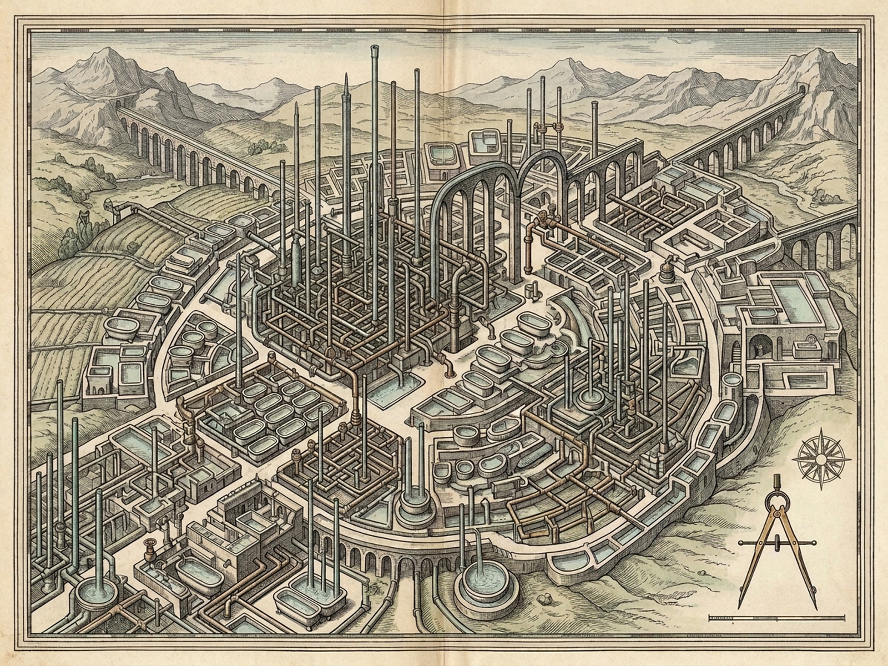
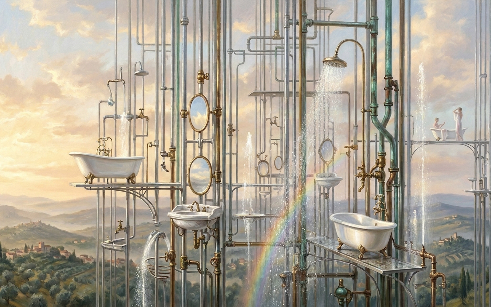

ARMILLA
Thin Cities 3 · Aerial Forest of Pipes & White Porcelain
6/6 Conduits Open · 2.8 bar
Brass Stopcocks [1–6]
6 Open
1·IClawfoot Bath
OPEN 2.8b
2·IIShower Canopy
OPEN 2.8b
3·IIIMirror Stand
OPEN 2.8b
4·IVWhite Lavabo
OPEN 2.8b
5·VBidet & Sifons
OPEN 2.8b
6·VISky-Crown Bowl
OPEN 2.8b
[V] Shut All
-
+
2.8 bar
Morning Sun Phase [H]
First Dawn Mist
Sunlit Morning Hymn
Zenith Prismatic Spray
Origin Hypothesis
Uncertain
Unfinished Before Bricklayers
Demolished Masonry
Enchantment or Whim
[M] Hymn On
[R] Reset
[P] Plates
Walls: 0 · Ceilings: 0 · Floors: 0
Sky Tiers I–VI · Az 0° · Drag Orbit
White porcelain perched like late fruit on hydraulic boughs — drag sky to orbit, click fixtures to splash
Zero Masonry
Porcelain Boughs & Naiads
Morning Canon
6 / 6
Singing Voices
12
Active Jets
78%
Mist Rainbow
Possession: Slender Nymphs & Naiads · Subterranean Wrath: None
I · LiriopeC5 · Singing
Clawfoot tub · stretching in morning sun
II · IanassaD5 · Singing
Brass shower · arching beneath spray
III · ClymeneE5 · Singing
Suspended mirror · combing long hair
IV · MeliteF#5 · Singing
White lavabo · splashing sunlit arcs
V · PhaethusaG5 · Singing
Bidet & sifon bough · poised in spume
VI · AegleB5 · Singing
Sky-crown bowl · singing water canons
Diptych
Cartographic Map
Architectural Plate
[Z] Zoom 1x
[Esc] Close

Cartographic Hydraulic Plan of Armilla (1600×1200)

Aerial Forest of Pipes & Porcelain Boughs (1600×1000)